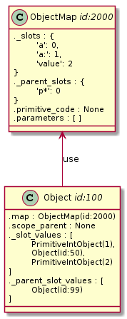
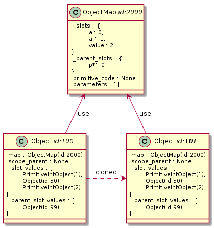
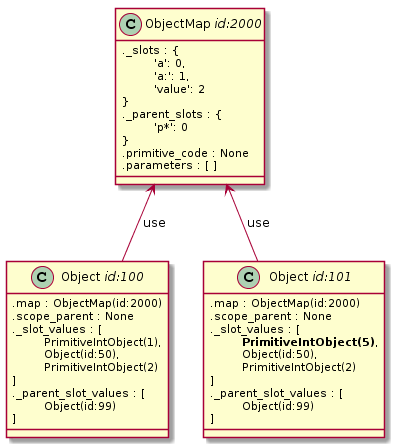
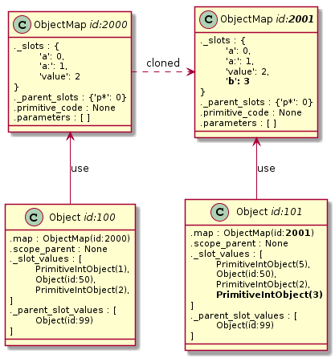
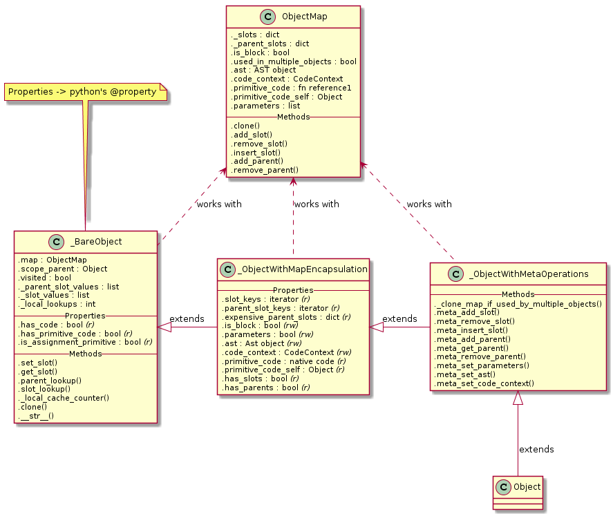

Dalším logickým krokem by mělo být vytvoření virtuálního stroje, který bude programovací jazyk interpretovat, a kompilátoru, který pro tento virtuální stroj zkompiluje zdrojový kód. Před tím, než se do toho můžu pustit je však třeba ujasnit si, nejlépe formou konkrétní implementace, jak bude vypadat reprezentace a rozložení objektů v paměti.
Specificky následující věci;
Přestože tento seriál je určen především pro pokročilé čtenáře, od kterých očekávám alespoň základní obeznámení se Selfem, pro jistotu zde rekapituluji na prototypech založený objektový model Selfu.
Objekty v Selfu se chovají jako asociativní pole, které na konkrétním jménu uchovávají buďto hodnotu, nebo odkaz na jiné objekty. Pár jméno : hodnota je nazýván slotem. Objekt je kolekcí takovýchto slotů.
(| slot = 1. another = 2 |)
Tento objekt na jisté úrovni abstrakce odpovídá slovníku {"slot": 1, "another": 2}.
Klíče v asociativním poli jsou přeloženy na konkrétní výsledek aktem poslání zprávy objektu. Zprávy můžou být unární (jednoduchý string bez mezer), binární (operátory jako +-/ a tak podobně), či keyword* (složené z jednoho, či více klíčových slov následovaných dvojtečkou).
obj unaryMessage. obj + anotherObj. obj keyword: anotherObj Message: evenMoreObjs.
Analogie k pythonu by byla:
obj.unaryMessage() obj.+(anotherObj) obj.keyword:Message:(anotherObj, evenMoreObjs)
Rozdíly oproti klasickému asociativnímu poli jsou následující:
Objekt je možné interně reprezentovat třídou zhruba a velmi abstraktně následujícího typu:
class Object:
def __init__(self):
self.slots = {}
self.parameters = []
self.parents = {}
self.code = None
Tedy Objekt může obsahovat sloty jako hashmapu, seznam přijímaných parametrů jako pole, slovník odkazů na rodiče a kód, což je zase jiný objekt, něco jako pole zpráv, které se postupně zasílají.
Od začátku jsem chtěl, aby sloty byly uloženy se zachováním pořadí v OrderedDictu, místo v klasické hashmapě. To není tak moc podstatné, pro samotný programovací jazyk, jako pro jeho využití k ukládání strukturovaných informací. Díky tomu je možné do stromové struktury například 1:1 konvertovat XML s poměrně malým overheadem.
V na třídách založených jazycích jsou objekty reprezentovány přibližně nějak jako pointer na třídu následovaný polem s datovými sloty udržujícími členské proměnné. Ve třídě samotné je uložen popis toho, co se dělá s datovými sloty. Tím je šetřena paměť, neboť samotná funkcionalita objektu je v ní uložena jen jednou pro všechny instance.
Self je na prototypech založený jazyk, kde nic jako třídy není. Objekty nejsou instancovány, ale klonovány z jiných objektů. Přesto, či respektive právě proto, je možné použít stejný trik, jako u jazyků s třídami. Při klonování je v paměti vytvořena takzvaná mapa a uživateli je vrácen objekt, který je podobně jako v předchozím případě pouze polem s hodnotami a pointerem na mapu. Pokud uživatel klon strukturálně modifikuje (přidá / ubere / přejmenuje sloty), je pro něj vytvořena samostatná mapa, do té doby jsou však mapy sdíleny.
Rozložení v paměti se tedy mění následovně:
class Object:
def __init__(self, map=None):
self.map = map
self.slot_references = []
def clone(self):
o = Object(self.map)
o.slot_values = self.values[:]
return o
class Map:
def __init__(self):
self.slots = OrderedDict()
self.parameters = []
self.parents = {}
self.code = None
V jakémsi pseudoUML to vypadá takto:

Pokud dojde ke klonování objektu, je vytvořen nový objekt obsahující pole s odkazy na hodnoty. Všechny ostatní informace, jako rodičovské sloty, seznam parametrů a kód objektu jsou pro všechny klony uložené v jedné mapě, na kterou si předávají reference. Díky tomu je možné signifikantním způsobem šetřit paměť.

To platí, i když se změní hodnota konkrétního slotu:

Celá implementace se ovšem kapku zesložiťuje v případě kdy se změní struktura, neboť je potřeba patřičně ošetřit všechny manipulace objektu tak, aby došlo k vytvoření nové mapy.

To jsem osobně vyřešil spoustou meta_ metod. Například .meta_add_slot(), která do klonu přidá nový slot, před tím však vytvoří klon mapy, takže tento nový objekt již používá vlastní mapu, kterou si může upravovat jak chce.
Překlad názvu slotu probíhá následujícím způsobem:
Je zavolána metoda .get_slot(), která se do mapy podívá, jestli obsahuje index patřičného slotu v OrderedDictionary property ._slots. Pokud ano, vezme tento index a najde patřičnou hodnotu v poli ._slot_values. Tu potom vrátí.
Uložení nové hodnoty probíhá podobně.
Meta-operacemi nazývám takové operace, které nějak mění strukturu objektu. Například přidání či odebrání nového slotu. Vzhledem k tomu že jsou sloty uloženy v OrderedDictu, je touto operací i prohození pozice slotu.
Vzhledem k tomu, že počet řádků narostl z původní několikařádkové myšlenky na pěkných pár stovek, rozhodl jsem se Objekt pro lepší čitelnost dekomponovat do několika tříd. Tato dekompozice nemá vliv na běh programu (stejně je z toho nakonec masivně inlinované C, které objekty nezná), je čistě jen pro lepší strukturovanost zdrojového kódu.
Zde je UML výsledné podoby objektového layoutu:

Zdrojový kód je možné najít v souboru:
Oproti tomu co jsem zatím popsal je možné vidět ještě mezi-třídu _ObjectWithMapEncapsulation, což je abstrakce nad většinou properties v mapě, abych nepřistupoval v kódu interpretru k interním záležitostem mapy přímo. Pro kód je mnohem výhodnější a čitelnější, když mapa zůstane čímsi na pozadí, optimalizací, která je pro vnější svět neviditelnou.
Jednou z naprosto klíčových funkcionalit Selfu, která mu dodává mnoho elegance, jenž například postrádá javascript, je delegace na rodičovské sloty.
Object obsahuje kromě metody .get_slot(), jenž pouze hledá v mapě patřičný slot také metody .parent_lookup() a .slot_lookup(). Druhá jmenovaná je tím, co se reálně používá všude v interpretru.
Metoda .parent_lookup() funguje následovně:
Projde všechny rodičovské sloty a pokud mají .visited nastavené na True, tak je přeskočí. Pokud ne, podívá se do jejich .slots (respektive do jejich mapy..) a zkusí v nich najít jméno slotu. Pokud tam není, postupuje rekurzivně do hloubky pro rodičovské sloty prvního rodičovského slotu. Všechny objekty, které navštíví, si označí pomocít property .visited a uloží pro pozdější resetování této property. Pokud je slot nalezen v některém z rodičů, či jeho rodičů, je vrácen. Pokud není vůbec nalezen, je vráceno None. V obou případech jsou nakonec všechny prošlé objekty označeny jako .visited = False. Prvním rodičovským slotem, který je vždy prohledávám je speciální rodičovský slot .scope_parent, který je použit k uchovávání lokálních parametrů a kontextu lokálních a globálních proměnných.
Druhá jmenovaná metoda .slot_lookup() se prvně podívá do vlastního seznamu slotů pomocí .get_slot() a pokud tam nic nenajde, pokračuje metodou .parent_lookup(). Tím je implementovaná dědičnost.
Příště se podíváme na bajtkód a literály a v jaké je to celé uložené datové struktuře.